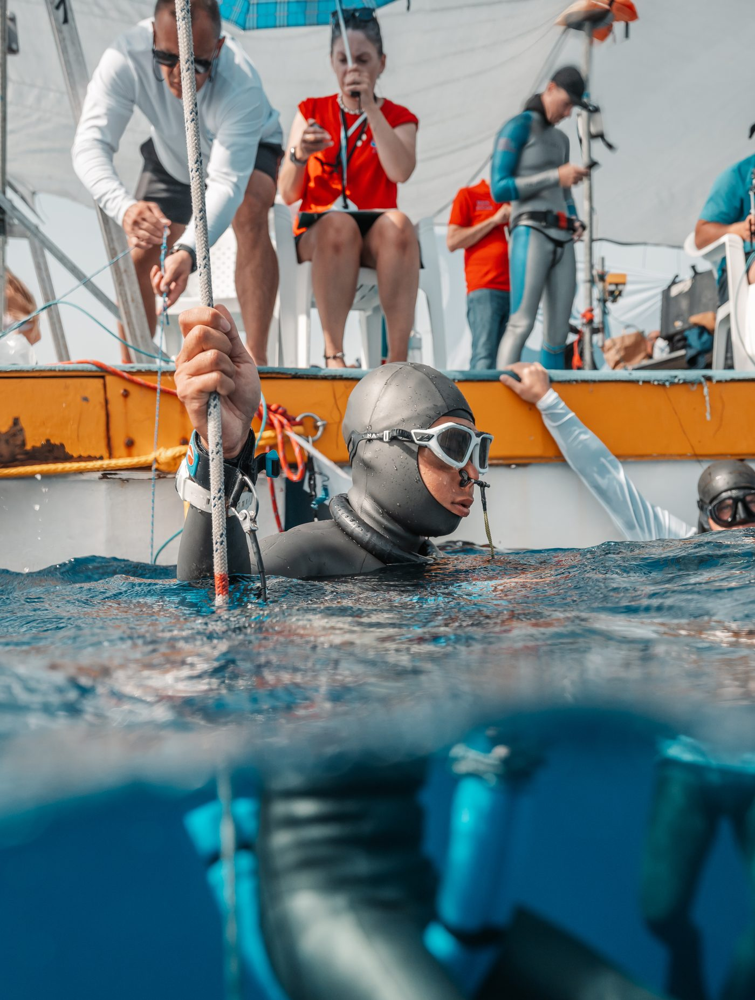
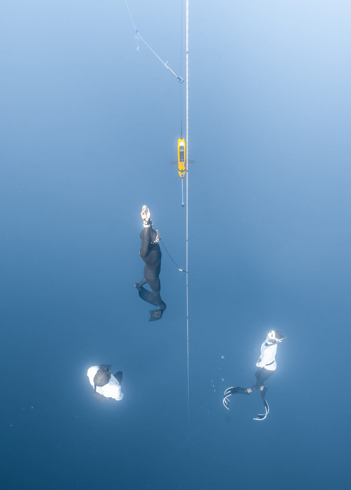

01我的故事
自我介紹
我的名字是紀閔中，來自南投縣車埕村，因工作的關係到了恆春，開始接觸到自由潛水，起初為了休閒娛樂，後期開始投入自由潛水教育以外，也積極參與比賽，因為賽事而有了明確目標，在不斷提升自我能力的過程當然遇到許多困難與挫折，不輕易放棄的精神也激勵了許多人，這讓我深刻體會到體育賽事的重要性，身為選手的我，希望能繼續爭取到更好的成績並參與更高級別賽事，透過自由潛水讓世界看見台灣，也盼望這份堅持的精神，可以成為他人的模範


自我介紹
我的名字是紀閔中，來自南投縣車埕村，因工作的關係到了恆春，開始接觸到自由潛水，起初為了休閒娛樂，後期開始投入自由潛水教育以外，也積極參與比賽，因為賽事而有了明確目標，在不斷提升自我能力的過程當然遇到許多困難與挫折，不輕易放棄的精神也激勵了許多人，這讓我深刻體會到體育賽事的重要性，身為選手的我，希望能繼續爭取到更好的成績並參與更高級別賽事，透過自由潛水讓世界看見台灣，也盼望這份堅持的精神，可以成為他人的模範


歷屆成績 · 更新於 2026/01/13
訓練與參賽計畫
兩年自由潛水長期計劃
結構概覽：
* 每年分為 兩個賽期
* 賽期 A：12月至 5 月 （目標為泳池或深度賽事遴選）
* 賽期 B：6月至 12 月（目標為大型深度賽事，如世錦賽）
每賽期詳細規劃
1. 恢復期（1 個月）
* 目標：恢復身心健康，評估上一賽期成果，制定下一階段計劃。
* 核心內容：
1. 調適訓練與生活節奏
* 檢討上一賽期的表現與計劃，調整新週期策略。
* 確保生活與訓練平衡，避免過度壓力。
2. 基礎體能與有氧能力維持
* 每週安排 2~3 次低強度有氧運動（跑步、游泳）。
3. 主動與被動休息
* 主動休息：進行輕量活動，如瑜伽或徒步，促進恢復。
* 被動休息：優化睡眠質量，定期進行按摩或放鬆療法。
4. 心態調整
* 冥想或專注力訓練，提高心理穩定性和抗壓能力。
2. 準備期（3 個月）
準備期 - 第 1 個月
* 目標：提升基礎能力與技巧，為進階訓練奠定基礎。
* 核心內容：
1. 基礎能力提升
* 核心力量訓練：強化身體穩定性。
* 重量訓練：提高主要肌群力量與耐力。
* 有氧訓練：提升心肺功能，每週 ㄉ 次中高強度運動。
2. 技巧雕琢
* 重點自由潛水姿勢與動作的優化。
3. 水下適應性訓練
* 模擬水下環境，進行深度適應練習。
4. 平壓技巧訓練
* 加強耳壓平衡能力，提升深潛舒適性。
5. 呼吸肌群伸展與優化
* 專項呼吸訓練（如橫膈膜伸展）
準備期 - 第 2、3 個月
* 目標：提高水下技巧與適應性，模擬比賽環境進行針對性訓練。
* 核心內容：
1. 水下技巧訓練
* 進階技巧練習
2. 低氧耐受訓練
* 提升耐缺氧能力。
3. 開放水域深度訓練
* 逐步增加下潛深度。
4. 泳池訓練
* 強化閉氣能力，水感維持
5. 比賽地點環境適應
* 前往比賽場地進行實地訓練，熟悉水溫、海流及其他環境因素。
6. 心靈訓練
* 增加冥想頻率，保持心理穩定性和專注力。
7. 呼吸肌群伸展
* 每日進行拉伸訓練，提升呼吸肌群彈性。
3. 比賽期（賽前三週）
* 目標：維持身體最佳狀態，確保比賽期間身心健康。
* 核心內容：
1. 訓練量調整
* 減少高強度訓練，避免疲勞累積。
* 每週安排少量深度訓練與耐受訓練，保持水感。
2. 呼吸肌群伸展
* 增加拉伸頻率，保持呼吸舒適性與肌群彈性。
3. 冥想與心理訓練
* 增加冥想時間，保持心理平穩與專注力。
4. 增加休息時間
* 充分睡眠與被動休息，確保比賽當天的最佳狀態。
整體目標
1. 以循序漸進的方式提升身體能力與心理穩定性。
2. 平衡訓練、恢復與比賽期的不同需求，避免過度訓練。
3. 針對比賽進行實戰模擬與環境適應，提升競技表現。
CMAS世錦賽雙蹼項目第六以內
刷新台灣CMAS雙蹼紀錄
刷新台灣CMAS無蹼紀錄
AIDA杯亞洲公開賽雙蹼項目第四以內
透過自由潛水國際賽事宣傳台灣
透過國際賽事讓更多台灣人認識自由潛水
我想達到…
著重於基礎能力提升,技巧雕琢,呼吸肌群優化,水下技巧以及自由潛水各項適應性增加
功能性訓練,重量訓練,有氧訓練,水感練習,平壓技巧練習,水下適應性練習,呼吸肌群伸展,開放水域深度訓練
著重於如何維持身體最佳狀態及心靈健康
少量自由潛水專項耐受訓練,少量深度訓練,大量呼吸肌群伸展,增加冥想頻率,增加休息時間,飲食調整
參與泳池賽作為全年度訓練結束與新賽季開始暖身，調適訓練節奏,生活節奏,並檢討賽事擬定下週期規劃是否需調整
心態調整,主動休息,被動休息,基礎有氧能力及體力維持
高強度間歇有氧訓練
有氧訓練:慢跑
有氧訓練:游泳
NSCA CSCS運動員課程
功能性訓練
重量訓練
自由潛水 海訓
自由潛水 泳池
自由潛水乾式平壓訓練
呼吸肌群伸展
水感練習
依照最擅長且穩定之成績申報,以取得白牌為主,穩定成長
正念呼吸
冥想
需求項目與數量（依官方頁面）
| 選手營養費 | NT$ 240,000 |
| 教練指導費 | NT$ 240,000 |
| 教練指導費 | NT$ 288,000 |
| 運動科學支援費 | NT$ 288,000 |
| 運動防護費 | NT$ 144,000 |
| 訓練器材裝備費 | NT$ 212,000 |
| 訓練器材裝備費 | NT$ 132,000 |
| 訓練器材裝備費 | NT$ 30,000 |
| 訓練器材裝備費 | NT$ 20,000 |
| 訓練器材裝備費 | NT$ 70,000 |
| 參賽報名費 | NT$ 120,000 |
| 參賽報名費 | NT$ 6,000 |
| 移地訓練費 | NT$ 40,000 |
| 移地訓練費 | NT$ 200,000 |
| 移地訓練費 | NT$ 600,000 |
| 選手零用金 | NT$ 720,000 |
| 參賽旅運費 | NT$ 60,000 |
| 參賽旅運費 | NT$ 200,000 |
| 參賽旅運費 | NT$ 10,000 |
| 課業輔導費 | NT$ 144,000 |
| 經費需求合計 | NT$ 3,764,000 |
| 蛙鞋 | 4雙 |
| 防寒衣 | 6套 |
| 電腦錶 | 2隻 |
標示「不公開」者為官方頁面未揭露之欄位。
網路公開搜尋結果，均附原始出處
申請者於體育署捐贈媒合平臺自填的相關連結。
出處：https://etenews.net/?p=75581&fbclid=IwZXh0bgNhZW0CMTEAAR0CneO3BbXDlOeuPihkDnga7eCn25aCcbHnnPe7rkRIGA8yiiPKr0Ny_dY_aem_Tu7g7WiffaS3ZIP4FRn2CQ自由潛水教練紀閔中的介紹頁，來自南投車埕、定居恆春，持AIDA與Molchanovs教練證。
出處：https://msocean.com.tw/archives/69073紀閔中分享參加2024年CMAS自由潛水深度世界錦標賽的心得與檢討。
出處：https://www.instagram.com/p/DD1kyBZTANu/